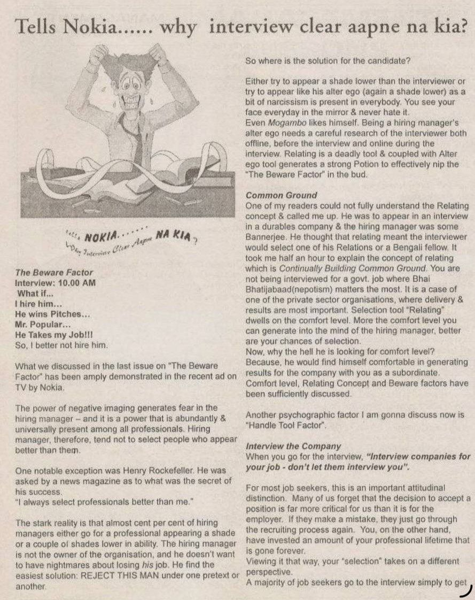
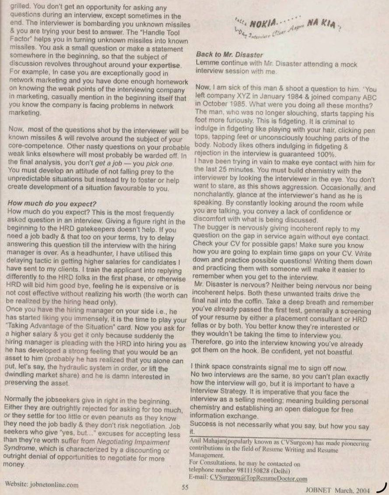

JOBNET Career Intelligence
Why Do Capable Professionals Sometimes Miss Great Opportunities?
About This Article
In this engaging article, Anil Mahajane explored why capable professionals lose opportunities — not because they lack competence, but because they struggle to communicate their achievements, connect their experience to business needs or inspire confidence in interviewers.
The article introduced three powerful concepts — the BEWARE Factor, the Alter Ego Tool and the Handle Tool — that continue to shape how interview success is understood today.
Original Publication
Scanned pages from the original printed publication.

JOBNET March 2004 — Page 1

JOBNET March 2004 — Page 2
Article Transcript
Originally published in JOBNET — March 2004
The BEWARE Factor
What we discussed in the last issue on "The Beware Factor" has been amply demonstrated in a recent TV ad by Nokia. The power of negative imaging generates fear in the hiring manager — a power abundantly and universally present among professionals.
Hiring managers therefore tend not to select people who appear better than them. One notable exception was Henry Rockefeller, who when asked the secret of his success said: "I always select professionals better than me."
The stark reality is that almost cent per cent of hiring managers go for a professional appearing a shade or a couple of shades lower in ability. The hiring manager is not the owner of the organisation, and he doesn't want to have nightmares about losing his job. He finds the easiest solution: REJECT THIS MAN under one pretext or another.
Three Interview Tools
01
The Alter Ego Tool
Appear like the interviewer's alter ego — a shade lower in perceived ability. Being a hiring manager's alter ego needs careful research of the interviewer both offline before the interview and online during the interview. Narcissism is present in everybody — you see your face everyday in the mirror and never hate it.
02
The Relating Tool
Continuously Build Common Ground. The more comfort level you can generate in the mind of the hiring manager, the better your chances of selection. He is looking for comfort because he would find himself comfortable generating results with you as a subordinate.
03
The Handle Tool
Turn unknown missiles into known missiles. Ask a small question or make a statement early on so that the subject of discussion revolves around your expertise. If you are exceptionally good in network marketing, mention the company's weak points in that area — most questions will then fall within your core competence.
You must develop an attitude of not falling prey to unpredictable situations but instead fostering development of a situation favourable to you. Interview companies for your job — don't let them interview you.
Salary Strategy
"How much do you expect?" is the most frequently asked question in an interview. Giving a figure right at the beginning to HRD gatekeepers doesn't help. Try to delay answering this question until the interview with the hiring manager is over.
Mr. Disaster Continues
Take a deep breath and remember: you've already passed the first test — a screening of your resume by a placement consultant or HRD. They're interested or they wouldn't be taking time to interview you. Go into the interview knowing you've already got them on the hook. Be confident, yet not boastful.
No two interviews are the same, so you can't plan exactly how the interview will go — but it is important to have an Interview Strategy. Face the interview as a selling meeting: build personal chemistry and establish an open dialogue for free information exchange.
Success is not necessarily what you say,
but how you say it.
Then & Now
Today's professionals may participate in AI-assisted screening, virtual interviews, leadership assessments, business case discussions and multiple rounds of executive interviews. Yet one reality has not changed — many highly capable candidates are still rejected not because they lack competence, but because they fail to communicate their value effectively.
Employers are no longer looking only for people who have performed a role. They are looking for professionals who can clearly demonstrate how they made a difference — across:
How the Concept Has Evolved
Then — 2004
Today — 2026
The Modern Process
At every stage, candidates are evaluated on their ability to communicate experience, demonstrate leadership and create confidence.
Executive Profile
AI / ATS Screening
Recruiter Discussion
Behavioural Interview
Business Case Discussion
Leadership Assessment
CXO / CEO Interview
Final Selection
Key Takeaways
Practical Advice
Interviews are not about proving that you know everything. They are about helping the interviewer understand why you are the right person to solve their business challenges.
Looking Ahead
Artificial Intelligence will continue to change recruitment, but leadership hiring will always remain a human decision. The professionals who consistently succeed are those who combine expertise with clarity, confidence and authenticity.
That is the central lesson of Tells Nokia… Why Interview Clear Aapne Na Kia? — remarkably relevant more than two decades later.
About the Author
Anil Mahajane
MBA (IIFT) · Founder & Director, C-Suite Talent Management Consulting
30+ years of executive search and leadership advisory across India and the Middle East — spanning GCCs, Defence & Aerospace, Healthcare, Consumer Electronics, Steel, Cement and Infrastructure.
Continue Reading